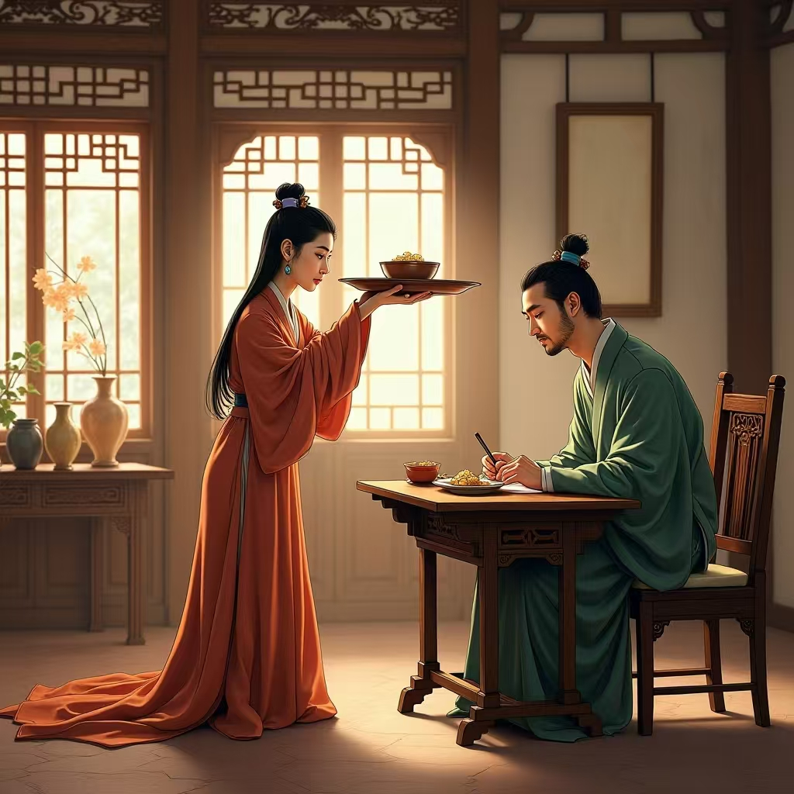

举案齐眉
文生图prompt:
- 在古代中国，一间古色古香的房间装饰着雕花窗户和木质桌椅。
- 房间里，一位面容温婉的古代女子跪在地上，用双手将盛放着食物的托盘举到与眉毛齐平的位置，递给她面前的丈夫。
- 丈夫穿着传统服饰，伏案书写。丈夫低头看向妻子，眼中充满了尊重和爱意。
- 他们周围摆放着一些雅致的装饰品，如花瓶、书法和绘画，营造出一种宁静和谐的氛围。
- 画作的风格倾向于古典和漫画风格。

生成过程阐述：
首先，在 豆包 中生成能够根据成语精准描述画面的智能体，并将“举案齐眉”这一成语输入，让其生成文字描述。接着，将文字描述复制到 Liblib 中，生成对应的图片，并根据图片与理想画面的差距，不断修改文字描述，直至满意。最后，将生成的图片导入美图秀秀等软件，对其进行最后的细节优化。